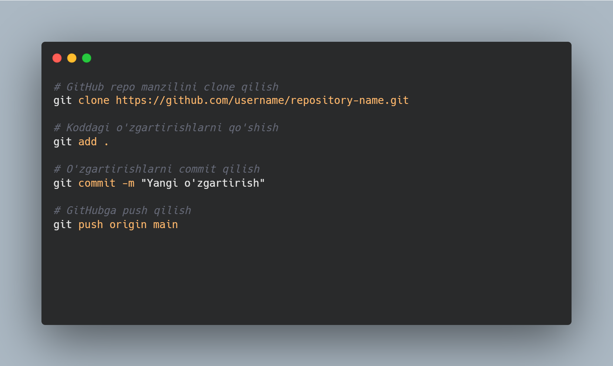

Github haqida ma'lumot
GitHub — bu kodni boshqarish va saqlash uchun onlayn platforma bo‘lib, u git versiya nazorati tizimi asosida ishlaydi. GitHub dasturchilar va jamoalar uchun kodlarni birgalikda yaratish, boshqarish va ulashish uchun qulay vosita hisoblanadi. GitHubning asosiy maqsadi — ochiq kodli dasturlarni rivojlantirish va jamoaviy ishni osonlashtirishdir.
GitHubning Asosiy Funktsiyalari
Versiya nazorati (Version Control): GitHub, Git versiya nazorati tizimidan foydalanadi. Git har qanday dastur kodining tarixini saqlab turadi, shuningdek, bir nechta foydalanuvchilar bir vaqtning o‘zida kod bilan ishlashlari mumkin. Repository (Repo): GitHubda kodni saqlash uchun repository (repo) yaratish mumkin. Bu dasturning barcha fayllarini, dokumentatsiyasini, va versiyalarini saqlaydigan joydir. Branches (Filiallar): GitHubda kodni bir nechta filiallarda boshqarish mumkin. Bu, bir vaqtning o‘zida bir nechta xususiyatlarni yoki tuzatishlarni ishlab chiqish imkonini beradi. Pull Request: Pull request — bu kodni asosiy filialga qo‘shishdan oldin, boshqa jamoa a’zolaridan tasdiqlash olish imkoniyatidir. Bu dasturdagi xatoliklarni oldini olish uchun juda muhim. Issues: GitHubda dasturdagi muammolarni yoki yangi imkoniyatlarni kiritish uchun Issues (muammolar) funksiyasi mavjud. Jamoa a’zolari o‘z fikrlarini va takliflarini yozishlari mumkin. Collaboration (Hamkorlik): GitHubda jamoaviy ish osonlashtirilgan. Kodni birgalikda ishlash, hujjatlar, muammolarni hal qilish va boshqa jarayonlar uchun oson vositalar mavjud.
GitHubning Boshqa Xususiyatlari
GitHub Pages: GitHub Pages yordamida statik veb-saytlarni yaratish va joylashtirish mumkin. GitHub reposidan to‘g‘ridan-to‘g‘ri veb-saytni yaratish imkoniyatini beradi. Actions: GitHub Actions yordamida CI/CD (Continuous Integration/Continuous Deployment) jarayonlarini avtomatlashtirish mumkin. Bu, kodni yozishdan tortib, uni ishlab chiqish va ishlab chiqarishga joylashtirishgacha bo‘lgan jarayonlarni avtomatlashtiradi. GitHub Gists: GitHub Gists — bu kichik kod bo‘laklarini saqlash va ulashish uchun joy. Ular tezda ulashiladigan va ishlov beriladigan skriptlar yoki kod parchalarini joylashtirish uchun ishlatiladi. Wiki: GitHubda loyiha bilan bog‘liq qo‘llanmalar va dokumentatsiyalarni saqlash uchun Wiki xususiyati mavjud. Security & Vulnerability Alerts: GitHub avtomatik tarzda ishlab chiqilgan kodni tahlil qilib, xavfli kutubxonalar yoki xavfsizlik teshiklari mavjudligini bildiradi.
GitHubni Ishlatish
GitHubga Ro'yxatdan O'tish GitHub’dan foydalanish uchun siz avvalo GitHub’da akkaunt yaratishingiz kerak: GitHub.com saytiga kirib, "Sign Up" tugmasini bosing. Email manzilingizni, foydalanuvchi nomini va parolni kiritib ro‘yxatdan o‘ting. Barcha talablarni to‘ldirib, akkauntingizni yaratishingiz mumkin. 3.2. Repo Yaratish GitHubda yangi repository yaratish uchun quyidagi qadamlarni bajarishingiz mumkin: GitHub hisobingizga kirganingizdan so‘ng, yuqori o‘ng burchakda joylashgan + tugmasini bosing va New repository ni tanlang. Repository nomini, izohini va boshqa parametrlarni tanlang, so‘ngra Create repository tugmasini bosing. Yangi repository yaratishdan so‘ng, uni kompyuteringizga clone (nusxa olish) qilishingiz mumkin.
GitHub Planlari
Free (Bepul): Oddiy foydalanuvchilar uchun bepul hisob. Ochiq repolar va cheklangan xususiyatlar mavjud. Pro: Professional foydalanuvchilar uchun mo‘ljallangan. Ko‘proq xususiyatlar va private (maxfiy) repolarni yaratish imkoniyatini beradi. Team: Jamoalar uchun mo‘ljallangan. Jamoaviy hamkorlik va boshqaruv imkoniyatlarini taqdim etadi. Enterprise: Katta tashkilotlar uchun mo‘ljallangan, yanada kuchli xavfsizlik va integratsiya xususiyatlariga ega.
GitHubda Yangi Loyihalarni Qanday Topish
GitHubda yangi yoki mashhur loyihalarni quyidagi usullar bilan topishingiz mumkin: Explore Page: GitHubda Explore bo‘limida eng mashhur va yangi loyihalarni topishingiz mumkin. Search: GitHubning qidiruv tizimi orqali ma'lum bir texnologiya, til yoki loyiha bo‘yicha izlash mumkin.
GitHub va Ochiq Kod (Open Source)
GitHubning muhim xususiyatlaridan biri — bu ochiq kod tizimi. Dasturchilar o‘z loyihalarini GitHubga joylashtirishi va butun dunyo bo‘ylab boshqa foydalanuvchilar tomonidan takliflar va o‘zgarishlar kiritilishini kutishlari mumkin. GitHubda millionlab ochiq kodli loyihalar mavjud.